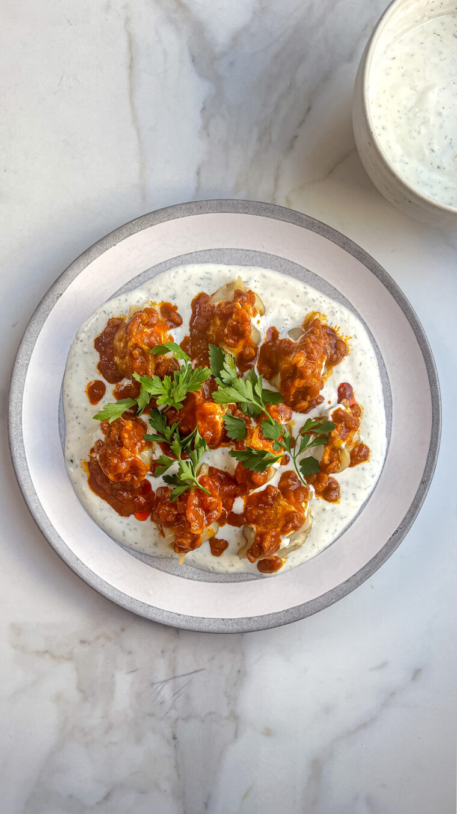

Mantu
The mantu is a thin dough that is filled with beef or lamb mixed in onions and spices. The steamed foodstuff then tops it off with an orange sauce made from chaka (thick creamy strained yogurt), giving this dish its unique taste!
Mantu is my favorite thing to order at my local Afghan restaurant. Not only are these dumplings incredibly delicious, but they’re also quite the show-stopper making them perfect for a dinner party. Also vegetarians just know I made this once with impossible plant-based meat and it turned out amazing. Go ahead and try it!
Ingredients
For the mantu filling:
- Mantu dough
- 3/4 lb ground meat (beef usually )
- 2 tsp cumin
- 1 tsp chilli powder
- 1/4 tsp tumeric
- 1/tsp cardamom
- 1/8 tsp nutmeg
- 2 cups diced onion
- 3 garlic cloves (minced)
- salt (for taste)
- 2 Tbsp cilantro
- 2 Tbsp oil
Yogurt mint sauce:
- 1 cup yogurt
- 1 TBsp dried mint (for taste)
- 1 garlic clove (finely minced)
- salt
Tomato-lentil sauce:
- 1/4 cup diced onion
- 2 tsp tomato paste
- 2 tomatoes
- 1/8 tsp tumeric
- 1/4 tsp chili powder
- 1/4 tsp cumin
- 1 garlic clove (minced)
- 2 tsp chaana daal
- salt
Steps
Filling:
- In a pan, heat up some oil. Add in your ground meat.
- Once the ground meat turns brown, add in your salt and diced onions. Allow the onions to soften and cook down
- Now add your spices. Cook for a few minutes. Taste and adjust for seasonings. Toss in the cilantro. Set aside and allow to cool.
- Once cooled, it's time to fill the wrappers. Take about a teaspoonful per wrapper. Fold the edges using water.
- Steam the mantu in a metal or bamboo steamer until the wrapper becomes translucent and almost clear.
Yogurt sauce
- Combine the yogurt, mint, and minced garlic. Add salt and taste and adjust for seasonings.
Tomato-lentil sauce
- Add a tablespoon or so of oil into a pan. On medium-high heat, sautee the diced onion.
- Add your salt. Once the onions turn transluscent, add the tomato paste. Allow it to cook down and caramelize.
- Now add your spices and chopped tomatoes. Add water and bring to a simmer.
- For the channa daal (also known as yellow split-peas), make sure to wash and soak it in water overnight. You can add it to the tomato sauce or boil it separately. (Note - the daal can take longer to cook in the tomato sauce, so I would recommend quickly boiling it in a small pot separately and then adding it to the tomato sauce).
- Taste and adjust for seasonings.
Assembly
- In a serving dish, add a layer of the yogurt sauce, then the mantu, then top with more yogurt sauce and the tomato-lentil sauce. Finally top with a little bit of olive oil and more dried mint. Your mantu is ready to serve.
Home Page